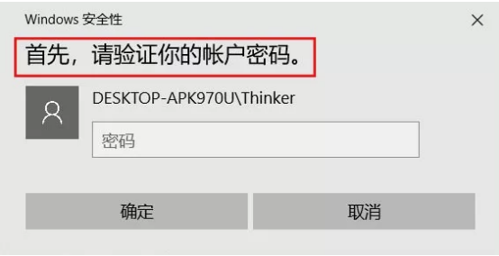

产品使用Q&A
Q1
所有带指纹传感器的PC外设产品都可以使用互啊佑（Who Are You）提供的指纹功能吗？
只有互啊佑（Who Are You）推出的或者是互啊佑（Who Are You）的合作品牌、并由互啊佑（Who Are You）提供指纹技术支持的PC外设产品才能使用相应的功能和服务，在这类PC指纹外设产品上都会标有互啊佑（Who Are You）的品牌标识及相应的文字提示，例如以下标识：
Q2
互啊佑（Who Are You）的PC指纹外设产品可以在Windows系统的哪些版本上使用？
这些产品的非指纹常规基本功能可以在windows系统的所有版本上使用；涉及到的指纹功能能够在win7、win8、win8.1、win10，32bit和64bit的所有主流操作系统上使用。Windows系统后续如有其他新版本发布，互啊佑（Who Are You）也会在第一时间支持。
Q3
互啊佑（Who Are You）的PC指纹外设产品的指纹功能是即插即用的吗？
当指纹外设产品和电脑连接后，所有非指纹的常规基本功能可以即插即用，如要使用指纹功能，需先登录互啊佑（Who Are You）官网（www.whoareyou.live），在【技术支持】页面中下载【互啊佑PC指纹外设应用套件】，安装、注册并完成相应设置，即可使用指纹功能了。
Q4
一个PC指纹外设产品只能一个人使用还是可以多人使用？
功能上支持多人使用，但考虑到指纹功能可能涉及私密性和安全性，为了更好地保护每一位用户的隐私及使用安全，建议只作为个人私有设备使用并保管。
Q5
使用【指纹加解密】功能对文件进行了指纹加密处理后，是否必须使用加密操作时的同一枚指纹才能完成解密？
不需要，只要是同一个互啊佑（Who Are You）帐户下已注册的指纹，均可对指纹加密文件完成解密操作。
Q6
【互啊佑PC指纹外设应用套件】安装并设置完成后是否可以关闭/退出或卸载？
只有当【互啊佑PC指纹外设应用套件】处于开启及运行状态下（并已登录帐户）才能正常使用PC指纹外设产品的指纹功能，因此请勿关闭或退出本软件。为确保用户每次开机即可拥有最佳使用体验，【互啊佑PC指纹外设应用套件】默认为开机自启动，请确保安全卫士等电脑管理/杀毒软件未阻止本软件的自启功能；也请不要随意卸载本软件，用户可以将软件最小化至系统托盘上，这不会对电脑操作造成任何影响。
Q7
当使用【互啊佑PC指纹外设应用套件】在进行操作设置时，如360等电脑管理软件弹出系统被修改的警告意味着什么？
这些产品的非指纹常规基本功能可以在windows系统的所有版本上使用；涉及到的指纹功能能够在win7、win8、win8.1、win10，32bit和64bit的所有主流操作系统上使用。Windows系统后续如有其他新版本发布，互啊佑（Who Are You）也会在第一时间支持。
Q8
指纹信息存储在何处？是否存在泄漏或被窃取的安全隐患？
用户的指纹信息经过加密处理后存储在安全环境中，安全环境内部具备合理的权限控制，无相应权限无法读取指纹数据，故私钥数据及指纹只能在安全环境内部使用，无法被窃取也不会泄露，请完全放心。
Q9
PC指纹外设产品损坏、遗失或更换之后怎么办？
如PC指纹外设产品损坏或遗失，只需重新购买由互啊佑推出的或提供指纹技术支持的PC外设产品，用户便可继续使用互啊佑（Who Are You）提供的指纹功能及服务，但在使用前需重新完成指纹注册及相关设置。
Q10
【互啊佑PC指纹外设应用套件】 被杀毒或安全类软件拦截了，如何恢复开机启动？
通过以下步骤操作可以恢复开机启动，以常用的360安全卫士和腾讯电脑管家为例
360安全卫士：
第一步：打开360安全卫士，点击界面上方的 【优化加速】按钮后，再点击左下角的 【启动项】;
第二步：在弹出窗口的 【启动项】一栏中找到被禁用的 【互啊佑PC指纹外设应用套件】，点击最右边的 【恢复启动】按钮，即可恢复开机启动。
腾讯电脑管家：
第一步：打开腾讯电脑管家，点击窗口下方的 【电脑加速】按钮后，再点击左下角的 【启动项】；
第二步：在弹出窗口的 【启动项】一栏中找到被禁用的 【互啊佑PC指纹外设应用套件】，点击最右边的 【已禁用】按钮使其变成 【已启用】状态，即可恢复开机启动。
如您使用的是其他的电脑管理软件而无法恢复 【互啊佑PC指纹外设应用套件】的开机启动， 请您致电或给我们发送邮件获取帮助， 服务热线：400-960-7980；客服邮箱：service@whoareyou.live ；工作时间：每日9:00-18:00。
Q11
【互啊佑PC指纹外设应用套件】 被杀毒或安全软件屏蔽、拦截或隔离了，怎么恢复使用？
通过以下步骤操作可以恢复使用，以常用的360杀毒为例：
第一步：打开360杀毒软件，点击左下角的【查看隔离文件】按钮；

第三步：在弹出窗口上点击【恢复】按钮，即可将【互啊佑PC指外设应用套件】恢复成正常使用状态。
第二步：在弹出窗口中找到被隔离的【互啊佑PC指纹外设应用套件】，点击右边的【恢复】按钮；
如您使用的是其他的杀毒软件无法找到恢复 【互啊佑PC指纹外设应用套件】的方法，
请您致电或给我们发送邮件获取帮助，
服务热线：400-960-7980，
客服邮箱：service@whoareyou.live
工作时间：每日9:00-18:00。
Q12
在注册指纹的时候始终在第一次注册时提示注册失败怎么办？
可能是账户权限问题，用户在使用前需要先新建一个本地账户或者Microsoft账户并且权限为管理员权限，如果不创建则会因为权限问题导致在【互啊佑PC指纹外设应用套件】中注册指纹失败。
设置步骤如下：
第一步：电脑设置中的账户选项
第二步：在帐户选项中选择：添加帐户，并将其设置成管理员权限
Q13
如何设置帐户的密码和PIN码？
我们以Windows 10为例
第一步：进入电脑的“设置”菜单，在设置选项中选择“账户”，然后从左边列表中选择 “登录选项”

第三步：弹出验证账户密码，输入刚刚设置的或原本账户密码然后确定。

第二步：在右边有创建账户密码及PIN密码，请先设置账户密码，然后在PIN下方点击“添加”按钮。（若原本账户就有密码可直接点击添加PIN码）

第四步：弹出验证账户密码，输入刚刚设置的或原本账户密码然后确定。
Q14
Windows 7系统如何使用互啊佑指纹外设产品？
如果您的当前账户类型为“Administrator”、“Guest”或“标准账户”时，将无法设定指纹应用，建议您重新建立一个管理账户。
第一步：请您在桌面右键单击计算机——管理——本地用户和组——用户
第二步：这时我们可以在右边看到，计算机里有的电脑账号，在下面的空白处点击右键，选择“新用户”
第三步：按照系统提示设置好密码点击“创建”，注意，在设置密码页面，取消“用户下次登录时须更改密码”，选择“密码永久不过期”
此时，已经创建好一个标准账户，但是还不能使用指纹功能。接下来需要将标准账户升级为管理账户，请在新账户上右击属性——隶属于——添加，输入 “administrators”，点击 “检查姓名”，最后点击“确认”，新管理账户就设置好啦！
Q15
Windows 8.1系统中的的Windows hello指纹录入无法成功录入指纹怎么办？
由于 Windows 8.1的系统的Windows hello指纹录入次数必须是固定的8次指纹采集，和我们现有的指纹外设产品录入次数有冲突（我们的产品只需要4次），所以导致指纹数据无法正常录入存储。为防止出现这种情况出现，推荐用户使用我们提供的【互啊佑PC指纹外设应用套件】录入指纹，这样才能保证完好的用户体验。
Q16
更换新的PC指纹外设产品后，注册时出现“该账户下已存在该枚指纹”的情况怎么办？
在电脑的【账户】—【登录选项】中的Windows hello中，用另外一枚没有注册过的手指注册指纹，注册完成之后选择删除之前的数据，就可以重新录入指纹使用了。
Q17
在Windows hello里面设置的指纹跟互啊佑软件设置的是同步的吗？
在Windows hello里面设置的指纹可以同步在【互啊佑PC指纹外设应用套件】里面，但是在【互啊佑PC指纹外设应用套件】里面设置的指纹不能同步在Windows hello里面。